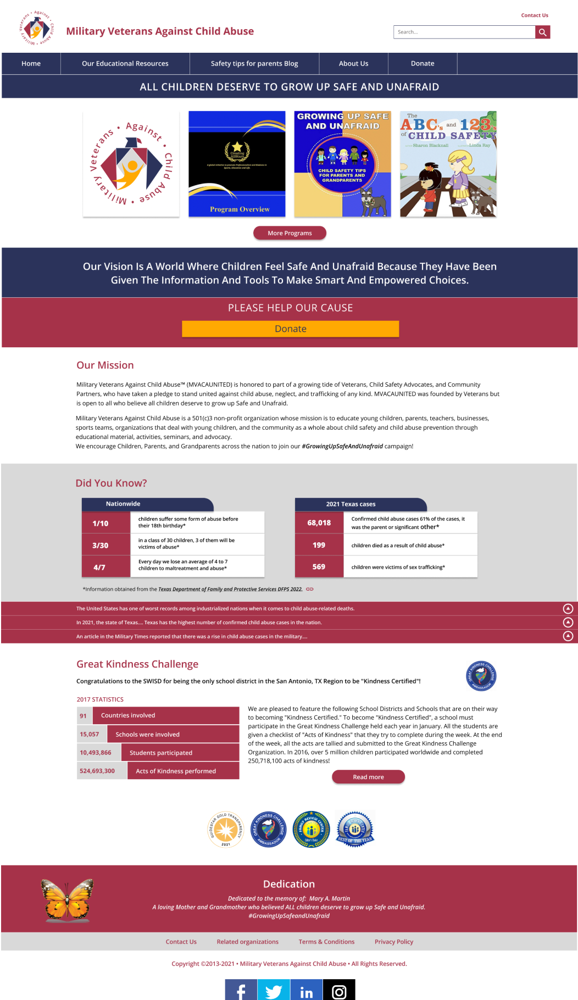

Military Veterans Against Child Abuse Website Redesign


We had a hard time figuring out the user that would use this website. We got in contact with the founder of the organization. We chose to interview a stakeholder from the organization because it would give us insight to their goal for the website and their users. I made the interview plan for interviewing the founder. This interview told us the goal of the organization for their users. My teammate did a competitor analysis to see how other similar organizations display their goal to their users
I created a user persona based on the information that we got from the founder interview. This would allow us to align our goal and design decisions with a potential user. My teammate and I redline annotated seperate webpages to get an idea of what our redesign would look like. I annotated the homepage and highlighted the specific details that lead to a lack of a goal for the user. We did these annotations in order to get a good idea of what changes we would need to make in order to have the website align with the goals of the user and the organization. We then moved to defining our problem statement in order to have a well defined, actionable goal for our project. I helped write and define this problem statement
My team decided to do ui sketches in order to brainstorm ideas on how our redesign would look. My sketch was for the homepage. I brought the resources from the organization along with their vision to the hero section of the homepage in order to clearly present the organization's goal. After this, took the navigation links that were on the website and sorted them into categories that we thought would better allow the users to accomplish the goal that the organization had in mind for them.
My teammate made a prototype that encorperated ideas from our sketches and card sorting. After some feedback from our peers, I made a low fidelity prototype that showed our iterations and gave my teammate a base for their new high fidelity prototype.
I then created a usability testing plan to make sure that our prototype was clear about it's goal and was intuitively navigable. I conducted two usability tests on our prototype while my teammate used the same usability testing plan to conduct two of their own usability tests. With these tests done, we took the feedback from our tests and iterated on our prototype. I then wrote an AB testing plan to decide which design we would take for a specific part of the website. My teammate and I each did an AB test that gave us our result, and we made our final iterations to our project before our presentation.
Some of our future opportunites with this project would be iterating on the layout of the safety tips for parents blog, fleshing out our desktop design by scaling our mobile design up, and presenting our work to the founder that we got in contact with. By the end of this, I feel that we made a good solution that allowed our users to clearly define the goal of the website and accomplish that goal. It was difficult finishing this project meant for 3 people with only 2. I feel like my partner and I helped lead each other to success, but my project management helped us get all of our deliverables done.